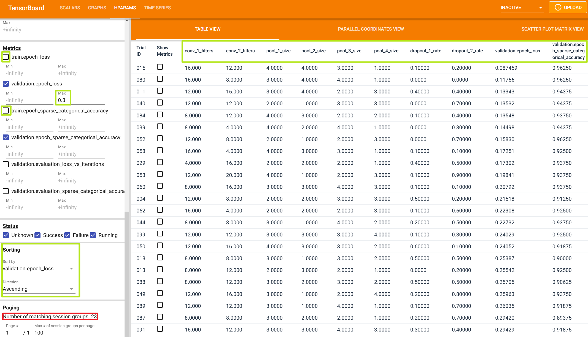
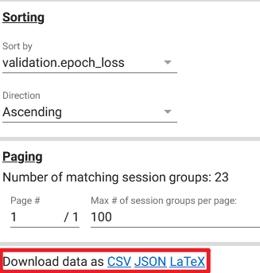

Finding the optimal model architecture and training configuration is a tedious and time-consuming task.
The manual process of repeatedly tuning a model's hyperparameters often leads to suboptimal model performance.
Hyperparameters are values that are used to control the model's learning process during training.
Their values determine the model's performance – specifically, the model's ability to correctly map the input data to the desired labels or targets.
The more optimal the hyperparameters, the better the model's performance.
In deep learning models, the most common hyperparameters are the number of hidden layers, the number of neurons in each layer, and the activation function used in each layer.
Additional hyperparameters
Train-validation-test split ratio
Number of epochs
Optimizer algorithm (e.g., gradient descent, stochastic gradient descent, or Adam optimizer)
Optimizer's learning-rate
Convolutional layer's kernel or filter size
Activation function in a neural network layer (e.g., Sigmoid, ReLU, Tanh)
Number of hidden layers
Number of activation units in each layer
Dropout rate
Pooling size
Batch size
Number of iterations (epochs) during training
Number of clusters in a clustering task
We can use KerasTuner to automate the process of hyperparameter optimization.
TensorBoard can be used alongside KerasTuner to visualize the optimization progress.
This article will cover the basics of hyperparameter optimization in deep learning projects using KerasTuner and TensorBoard.
The examples will be based on my own ToonVision computer vision project.
The ToonVision project is a single-label, multiclass classification model for classifying Cogs in ToonTown Online.
There are four unique Cog types - also called corporate ladders or suits.
Our goal is to train a model that can classify Cogs into one of the four unique suits, as seen in the image below.
We'll create a model from scratch and use my ToonVision dataset to train and evaluate the model.
The model will be a convolutional neural network (CNN).
It will have two "blocks", each of which contains a single convolutional layer, two max-pooling layers, and a dropout layer.
The final layer will be fully-connected (Dense) with four output nodes, one for each of the four Cog types.
The model's hyperparameters were chosen by intuition and experimentation.
However, I believe that we can find better hyperparameters by tuning the model's hyperparameters using KerasTuner.
We'll focus on tuning the following four hyperparameters with KerasTuner:
filters: The number of convolutional filters in each convolutional layer.
kernel_size: The size of the convolutional kernel.
pool_size: The size of the max pooling layers.
dropout_rate: The probability of dropping a neuron.
Additional hyperparameter tuning could include the number of layers (convolutional/pooling/dropout), optimizer algorithm, and/or activation functions, but I will not cover these in this article.
Before we start tuning the hyperparameters, let's discuss what KerasTuner does and how it helps ML engineers.
KerasTuner
KerasTuner is a general-purpose hyperparameter tuning library.
The library is well integrated with Keras, allowing for hyperparameter tuning with minimal code changes.
It is a powerful, yet simple, library.
We can begin tuning with three easy steps:
Define the hyperparameter search space
Create a KerasTuner tuner object of type Hyperband, BayesianOptimization, or RandomSearch
Launch the tuning process
Pretty simple, right?
Let's take a look at how we can implement the above steps.
Define the hyperparameter search space
Defining a search space is as simple as replacing the layers' hyperparameter values with KerasTuner's search space methods: hp.Int, hp.Float, hp.Choice, etc.
For instance, the following code block defines a search space for the number of convolutional filters in a convolutional layer.
When launched, the tuner searches for the most optimal filter count by varying the number of filters in the layer from 4 to 16, training the model, and comparing model metrics.
What was once a tedious, manual task is now a simple and powerful process for ML engineers.
The three search space methods above only scratch the surface of KerasTuner's available methods.
More details about the KerasTuner search space methods can be found here.
The following code block is our model-building function with defined search spaces.
Recall that we're searching for the most optimal filter count, kernel size, pooling sizes, and dropout rate.
Note the use of hp.Int, hp.Float, and hp.Choice methods in each layer.
Each of these methods defines a search space for the corresponding hyperparameter.
Integers and floats are used for discrete search spaces (minimum and maximum values with steps), while choices are used for categorical search spaces.
defmodel_builder(hp):model=keras.Sequential([# Input and augmentation layerskeras.layers.Rescaling(1.0/255),keras.layers.RandomFlip("horizontal"),# Block 1: Conv2D -> MaxPool2D -> MaxPool2D -> Dropoutkeras.layers.Conv2D(filters=hp.Int("conv_1_filters",min_value=4,max_value=16,step=4),kernel_size=hp.Choice("conv_1_kernel_size",values=[3,5]),activation="relu",padding="same",),keras.layers.MaxPooling2D(pool_size=hp.Int("pool_1_size",min_value=2,max_value=4,step=1),),# Min value == 1 will void the second pooling layerkeras.layers.MaxPooling2D(pool_size=hp.Int("pool_2_size",min_value=1,max_value=4,step=1),),keras.layers.Dropout(rate=hp.Float("dropout_1_rate",min_value=0.0,max_value=0.9,step=0.1),),...# Repeat for Block 2 (omitted for brevity)# Output layerkeras.layers.Flatten(),keras.layers.Dense(units=4,activation="softmax"),])model.compile(optimizer=tf.keras.optimizers.Adam(learning_rate=hp.Choice("learning_rate",values=[1e-2,1e-3,1e-4])),loss=tf.keras.losses.SparseCategoricalCrossentropy(),metrics=[tf.keras.metrics.SparseCategoricalAccuracy()],)returnmodel
Search space considerations
Selecting the correct search space methods and values is critical to the success of the tuning process.
We do not want such a large search space that the tuner takes too much time and resources.
We also do not want such a small search space that the tuner does not find any optimal hyperparameters.
Rather, we must consider meaningful values for each hyperparameter.
This is where intuition, experimentation, and domain expertise come in to help us define the search space.
For my model, I knew that the number of convolutional filters should remain low (4 to 16).
This choice was made in part because I wanted to avoid overfitting to the validation data during training.
I also knew from experience that the more filters I have, the lower my model's generalization performance.
Furthermore, I stacked two MaxPooling2D layers for each block because I knew the main differentiation between classes is the Cog's suit color.
My intuition says that more pooling is better in the case of classifying entities based on color rather than finer details, such as eye color or suit design.
I'm putting my intuition to the test by defining a search space capable of evaluating a model's performance with either a single MaxPooling2D layer or stacked MaxPooling2D layers.
This is how domain expertise – knowing your data's characteristics – helps us define meaningful search spaces.
Create a tuner object
KerasTuner contains multiple tuners: RandomSearch, BayesianOptimization, and Hyperband.
Each has its unique tuning algorithm, but all of them share the same search space defined above.
Here are the three tuners along with their respective algorithms:
kerastuner.tuners.randomsearch.RandomSearch: An inefficient, random search algorithm
kerastuner.tuners.bayesian.BayesianOptimization: A Bayesian optimization algorithm that follows a probabilistic search approach by taking previous results into account
kerastuner.tuners.hyperband.Hyperband: An optimized variant of the RandomSearch algorithm in terms of time and resource usage
My preferred tuning method is to first perform a RandomSearch with numerous trials (100+).
Each trial samples a random set of hyperparameter values from the search space.
The goal is to find the best hyperparameter values that minimize (or maximize) the objective – in our case, the goal is to minimize the validation loss.
fromkerastunerimportRandomSearchtuner=RandomSearch(hypermodel=model_builder,objective="val_loss",max_trials=100,executions_per_trial=1,# Increase to reduce variance of the resultsdirectory="models",project_name="tuned_multiclass_randomsearch",seed=42,)
RandomSearch is the least efficient algorithm, but it provides useful insight into the general whereabouts of optimal hyperparameter values.
These insights can be used to further reduce the search space for more effective tuning.
Following the random search, I'll review the highest performing parameters in TensorBoard, tighten my search space, and then launch a more efficient Hyperband or BayesianOptimization search.
Let's launch a RandomSearch and review the results.
Launch the tuning process
The tuning process uses identical arguments as the keras.Model.fit method.
Refer to the code block below to see how the RandomSearch is launched.
We will utilize the tf.keras.callbacks.TensorBoard callback to monitor the tuning process progress.
This callback will save the logs of all trials to the ./tb_logs/randomsearch/ directory.
We can then use TensorBoard to visualize the results of all trials during/after the tuning process.
Details about the TensorBoard callback API can be found here.
A Keras guide for visualizing the tuning process can be found here.
Tuning process search times
On a GPU, 100 trials of RandomSearch takes roughly 45 minutes with the search space above.
The search would take even longer if done on a CPU.
We can reduce the search time by constraining the search space, reducing the number of trials, decreasing the number of epochs, and/or reducing the executions per trial.
Alternatively, we could pick a more efficient algorithm, such as Hyperband or BayesianOptimization.
Search times are also dependent on the size of the model - large filters in the Conv2D layers or small pooling sizes in MaxPooling2D layers result in larger models and slower training times.
That's why it's important to define the search space with meaningful values; if the values are needlessly large, the search will be inefficient with regard to time and computation.
Tuning process results
We can review the results of the tuning process using the tuner.results_summary(N) method.
The output is a list of trial summaries including each trial's hyperparameter values, objective value, and other metrics.
The summaries do not include trial IDs, so we cannot use this method to retrieve a specific trial.
Fortunately, TensorBoard provides a way to retrieve the results of specific trials.
The snippet above shows the top and bottom two trials, with 96 trials omitted in between.
There's a significant difference in the validation loss (Scores) of the top and bottom two trials.
If I had to speculate, I would say that the performance gap is due to the large dropout_1_rate of 0.8.
We'll see if this is the case in the next section.
For now, let's learn how to create a model with the best hyperparameter values.
Retrieve the best hyperparameter values
The tuner.best_hyperparameters(N) method returns the N best hyperparameter values as a list of HyperParameters objects.
The following code block shows how to retrieve the top hyperparameter values.
Now that we have the best hyperparameter values, let's figure out how to create a model with these values.
Create a model
Fortunately, KerasTuner makes it easy to create a model with the best hyperparameter values.
All we have to do is call the tuner.hypermodel.build() method.
This is the same as calling model_builder(params).
model=tuner.hypermodel.build(params)
Just like that, we have a fresh, untrained model with the best hyperparameter values.
We can now train this model from scratch and evaluate it.
We will train the tuned model and compare it to the baseline later in this article.
What if I want the best model from the trials?
Using the models from the tuning process is not recommended.
But, as seen in the code block below, it is possible.
It's usually a good idea to train a new model from scratch rather than use the pre-trained model from the trials.
When training from scratch, we concatenate the training and validation data together to create a single training dataset.
This allows the model to learn from a larger, more representative dataset using the most optimal hyperparameters.
Ultimately, the model trained from scratch will be smarter than the model from the trials.
Enough about the tuning process.
Let's take a look at the tuning results in TensorBoard.
TensorBoard
TensorBoard is a web application for monitoring and visualizing the progress of machine learning experiments.
It can track metrics, visualize model layers and graphs, view histograms of weights/biases/other tensors, and much more.
Learn how to get started with TensorBoard using their guide.
We'll launch TensorBoard using the tensorboard command.
The --logdir flag specifies the directory where the logs are stored.
$ tensorboard --logdir toonvision/multiclassification/code/tb_logs/randomsearch/
Serving TensorBoard on localhost; to expose to the network, use a proxy or pass --bind_all
TensorBoard 2.9.1 at http://localhost:6006/ (Press CTRL+C to quit)
Once launched, we can open TensorBoard in a web browser by navigating to http://localhost:6006/.
We will use TensorBoard to view the hyperparameter values and their corresponding loss and accuracy metrics.
As such, we must navigate away from the SCALARS tab and towards the HPARAMS tab.
TensorBoard's initial screen
Hyperparameter values and loss/accuracy metrics
The raw hyperparameter values from all trials are displayed in the TABLE VIEW tab.
By default, the table columns are unordered, and some are even hidden, so take a minute to explore the data and reorder the columns.
The green boxes in the image below outline the changes I made to the sorting, ordering, and filtering of the table.
In summary, the changes are:
Hide training loss and accuracy metrics
Sort the table by the validation loss metric (the metric we are trying to optimize)
Reorder table columns to group similar hyperparameters together
Filter validation loss metrics above a certain threshold (>0.3)

Filtered and sorted
The resulting table includes only 23 trials (see the red square in the image's bottom left corner), which is a decent starting point for further constraining the search space.
We can see a few trends in the table data:
The first dropout layer often has a low dropout rate (<0.2)
The Conv2D layers successively reduce the number of filters (e.g., 16 -> 12, 16 -> 8)
When the number of filters is reduced, the fourth MaxPooling2D (pool_4_size) layer is often discarded (set to 1x1 pool size)
NOTE: Download table data into CSV/JSON/LaTeX format
If you'd rather perform your own data analysis, you can download the table data into CSV/JSON/LaTeX format.
The download link is in the bottom-left corner of the HPARAMS tab.
Download link location

Table View does not provide concrete, visual information about trends found during the tuning process.
Let's take a look at the other views available in TensorBoard, starting with Parallel Coordinates View.
Parallel coordinates view
Parallel coordinates is a visualization technique used to plot individual data points across vertical axes.
The result is a series of connected points along each axis.
This view is useful for visualizing the relationships between multiple variables.
In our case, we will use it to visualize the relationship between different hyperparameters and their effect on the validation loss metric.
Initial, unfiltered parallel coordinates view, colored by validation loss
The figure above shows the initial parallel coordinates view for all 100 trials.
The bluer the line, the lower the validation loss metric – the more optimal the hyperparameters.
On the other hand, the redder the line, the less optimal the hyperparameters.
The initial unfiltered visualization is convoluted, but we can make out some trends.
For instance, we can see a handful of purple/blue lines in the lower values of dropout_1_rate and upper values of dropout_2_rate.
Let's filter the data and see what trends we can find.
Upper distribution of hyperparameters
Filtering the data and dropping a few columns can help remove the clutter and clarify the trends.
The light green box in the image below highlights parallel coordinates that fall within some validation loss metric range.
As a result, the only colored lines we should see are the ones with a validation loss below 0.75.
Of the 100 trials, the bluest lines are most commonly seen stemming from dropout_1_rate values of <0.2.
This strengthens my idea that higher model performance is directly correlated to lower dropout rates for the first dropout layer.
Highlighted trials with upper 50% validation values (0.1 -> 0.75)
Next, let's only include trials with a validation loss below 0.3 - the highest performers.
Now there are 23 trials visible in the parallel coordinates view.
After constraining the view to highlight trials with 95% validation accuracy or above, we're left with three trials.
The remaining three trials show two trends that I touched on before:
The first dropout layer has a low dropout rate (<0.2)
The Conv2D layers successively reduce the number of filters (e.g., 16 -> 12, 16 -> 8)
We'll keep these trends in mind when we reduce our hyperparameter space and launch additional tuning trials.
Filtered trials highlighted with >=95% validation accuracy
We've narrowed down the search space correlating to the highest performers.
Now, let's see what hyperparameters are associated with the lowest performers.
Lower distribution of hyperparameters
Recall that the redder the line, the higher the validation loss metric – the less optimal the hyperparameters.
In the figure below, we can see the worst-performing hyperparameters.
It should be no surprise to see that the lowest performing models contain large dropout_1_rate values.
Highlighted trials with lower 50% validation values (0.75 -> 1.4)
There aren't many obvious trends in the lower-performing models, so let's wrap up our findings and move on.
Parallel coordinates view findings
Before we move on to the next view, let's discuss our findings from the parallel coordinates view.
The following figure shows the parallel coordinates view for trials with <0.2 validation loss.
I believe these hyperparameter value ranges are the best starting points for the next tuning process.
Highlighted trials with <=0.2 validation loss
The next tuning process will reduce the following hyperparameter search spaces:
The first dropout layer must have a low dropout rate (we'll try <=0.4)
The second dropout layer can have a high dropout rate (<=0.8)
The second Conv2D layer must have at least 8, but no more than 20, filters
The fourth MaxPooling2D layer must have a pool size <=3
Now, let's take a look at how the findings above look in Scatter Plots Matrix View.
Scatter plots matrix view
The scatter plots matrix view is more pleasing to the eye than the parallel coordinates view.
It provides less clear information about the relationships between hyperparameters compared to the parallel coordinates view.
However, it excels at showing distributions of hyperparameter values with respect to their validation loss and accuracy.
Below is a scatter plots matrix view for all 100 trials.
Same as before, the bluer the dot, the lower the validation loss metric – the more optimal the hyperparameters.
Unfortunately, the columns in this view are unordered and cannot be moved.
Initial, unfiltered scatter plots matrix view, colored by validation loss
We can filter the data based on the validation loss metrics, or we can highlight a subset of trials.
For instance, the figure below highlights trials with validation loss lower than 0.5.
Highlighted trials with validation loss <=0.5
If we filter the data to include only trials with validation loss lower than 0.5, we can see that the blue dots are more evenly distributed.
We can also highlight the trials with validation loss lower than 0.2.
From the figure below, we can see clearly that higher model performance is dependent on lower initial dropout rates.
Filtered trials highlighted with validation loss <=0.2
That's about it for scatter plots matrix view.
It's the most complex view of the three, but it provides the clearest information about hyperparameter distributions.
The time has come to train our optimal model and compare it against the baseline model!
Tuned vs baseline performance
Earlier in the article, we discussed how to retrieve the most optimal hyperparameters and create a tuned model.
Now, let's train our tuned model and compare it against the baseline model.
Baseline model
The baseline model was trained for 100 epochs with a learning rate of 1e-3 and decay of 1e-6, a 50% dropout rate, and image augmentations.
The early stopping callback stopped the training at 59 epochs.
# Create and compile the baseline modelbaseline_model=make_multiclass_model_padding(name="opt_tv_"+opt._name,dropout=0.5)baseline_model.compile(loss=tf.keras.losses.SparseCategoricalCrossentropy(),optimizer=tf.keras.optimizers.Adam(learning_rate=1e-3,decay=1e-6),metrics=[tf.keras.metrics.SparseCategoricalAccuracy()],)# Train the baseline modelprint(f"Training model {baseline_model.name}")history=baseline_model.fit(np.concatenate((train_images,val_images)),np.concatenate((train_labels,val_labels)),epochs=100,batch_size=64,verbose=0,callbacks=[tf.keras.callbacks.EarlyStopping(monitor="loss",patience=5,restore_best_weights=True),],)
Tuned model
Recall earlier in the article when we retrieved the most optimal hyperparameters and created a tuned model.
We'll follow the same steps now and also train the model for 100 epochs.
importnumpyasnpimporttensorflowastfparams=tuner.get_best_hyperparameters(num_trials=1)[0]tuned_model=tuner.hypermodel.build(params)# Train the optimal modelhist=tuned_model.fit(np.concatenate((train_images,val_images)),np.concatenate((train_labels,val_labels)),epochs=100,batch_size=64,verbose=0,callbacks=[tf.keras.callbacks.EarlyStopping(monitor="loss",patience=5,restore_best_weights=True),],)
Model predictions
The baseline model had 12 wrong predictions on the test set of 197 images.
That's over 6% of the test set incorrectly labeled!
The tuned model, on the other hand, had only 1 wrong prediction on the test set.
When evaluating the two models against the test set, we can see that the tuned model has extraordinarily low loss and high accuracy.
To be fair to the baseline model, its performance is not terrible; the tuned model is just way better.
The tuned model significantly improved over the baseline model with regard to test set predictions and evaluation.
However, the tuned model is over 4x the size of the baseline model!
Comparing the model summaries below, we can see that the tuned model has significantly more parameters than the baseline model.
I would much prefer to see the tuned model be smaller, while also performing better, than the baseline model.
We can improve the tuned model by reducing the hyperparameter search space, performing additional optimization trials, comparing to the baseline, and repeating the process.
Conclusion
We can see the benefits of hyperparameter tuning.
Not only does the engineer save time and effort, but they can greatly improve model performance while gaining invaluable insights about why the model performs well.
Surprisingly, RandomSearch did an excellent job of exploring the hyperparameter space and finding the best hyperparameters.
Although it wasn't the most efficient way to do hyperparameter tuning, it was a good way to get a sense of what the best hyperparameters are.
Future work will include more hyperparameter tuning with the new, constrained search space.
Hopefully, the additional tuning will lead to a model that performs better than the baseline and tuned model.
In fact, additional tuning resulted in a model that's half the size of the baseline model, but the same performance as the tuned model!
KerasTuner is a great tool for hyperparameter tuning, and I hope it's useful for other engineers.
Huge kudos to the KerasTuner team for creating such a simple and powerful tool.